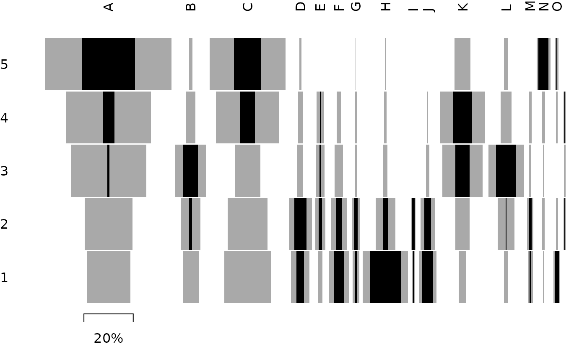
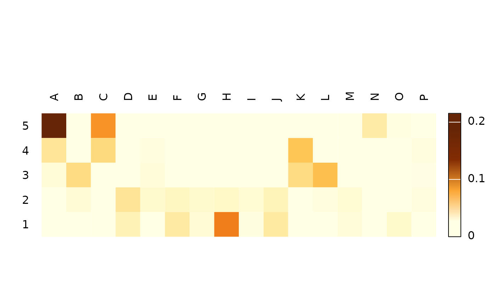
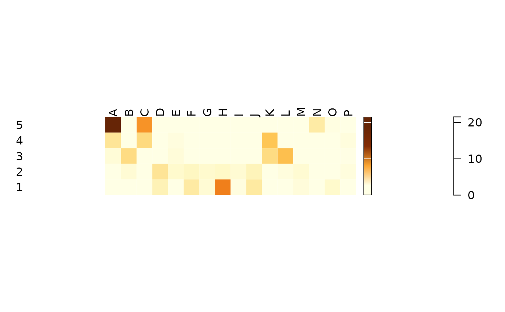

seriograph()produces a Ford diagram highlighting the relationships between rows and columns.eppm()computes for each cell of a numeric matrix the positive difference from the column mean percentage.
Usage
seriograph(object, ...)
eppm(object, ...)
# S4 method for matrix
eppm(object)
# S4 method for data.frame
eppm(object)
# S4 method for matrix
seriograph(
object,
weights = FALSE,
fill = "darkgrey",
border = NA,
axes = TRUE,
...
)
# S4 method for data.frame
seriograph(
object,
weights = FALSE,
fill = "darkgrey",
border = NA,
axes = TRUE,
...
)Arguments
- object
A \(m \times p\)
numericmatrixordata.frameof count data (absolute frequencies giving the number of individuals for each category, i.e. a contingency table).- ...
Currently not used.
- weights
A
logicalscalar: should the row sums be displayed?- fill
The color for filling the bars.
- border
The color to draw the borders.
- axes
A
logicalscalar: should axes be drawn on the plot? It will omit labels where they would abut or overlap previously drawn labels.
Details
The positive difference from the column mean percentage (in french "écart positif au pourcentage moyen", EPPM) represents a deviation from the situation of statistical independence. As independence can be interpreted as the absence of relationships between types and the chronological order of the assemblages, EPPM is a useful tool to explore significance of relationship between rows and columns related to seriation (Desachy 2004).
seriograph() superimposes the frequencies (grey) and EPPM values (black)
for each row-column pair in a Ford diagram.
References
Desachy, B. (2004). Le sériographe EPPM: un outil informatisé de sériation graphique pour tableaux de comptages. Revue archéologique de Picardie, 3(1), 39-56. doi:10.3406/pica.2004.2396 .
See also
Other plot methods:
matrigraph(),
plot_bertin(),
plot_diceleraas(),
plot_diversity,
plot_ford(),
plot_heatmap(),
plot_rank(),
plot_rarefaction,
plot_spot()
Examples
## Data from Desachy 2004
data("compiegne", package = "folio")
## Seriograph
seriograph(compiegne)

seriograph(compiegne, weights = TRUE)

## Compute EPPM
counts_eppm <- eppm(compiegne)
plot_heatmap(counts_eppm, col = khroma::color("YlOrBr")(12))
